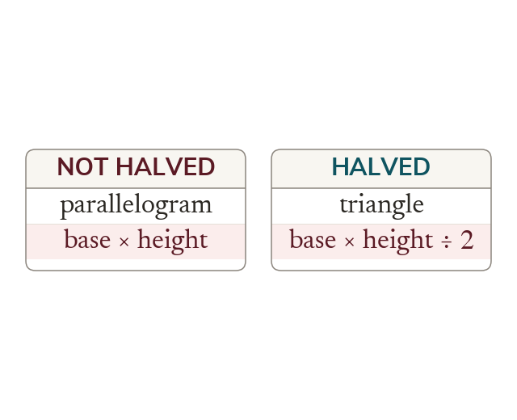

Three formulas, one idea
Each shape rearranges into a rectangle, which is where its formula comes from. A triangle is half a parallelogram, and a trapezium averages its two parallel sides.
Each of these shapes can be turned into a rectangle without changing how much space it covers, and that is where its formula comes from. A parallelogram becomes a rectangle when a triangle is cut from one end and moved to the other, so its area is base times height. A triangle is half a parallelogram cut along a diagonal, so its area is halved. A trapezium is what remains when the two parallel sides are averaged, so half their sum takes the place of a single base. The formulas are therefore not three separate facts to be remembered but one fact seen from three positions.